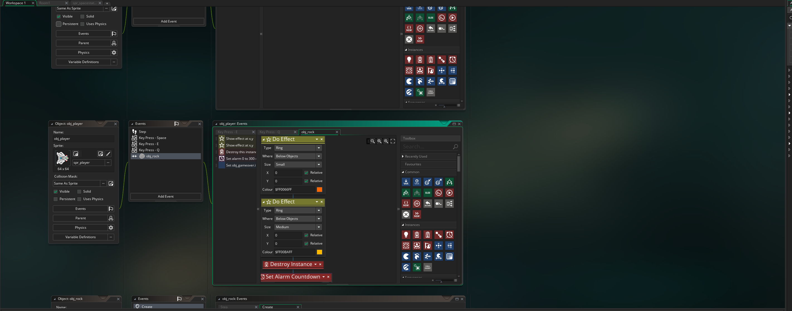

Saul's 8-Bit Website
Welcome to the 8-Bit site
About me
Hi i'm Saul. I am a student at CompCamps2024. This year at CompCamps we designed games of our own. the game in question is:
My Project
This Project was made in Game-Maker which is a Revamped Arcade Asteroid Game that i renamed to Asteroid Mission. The original has been around since 1979 and remade with a new artstyle and graphics
